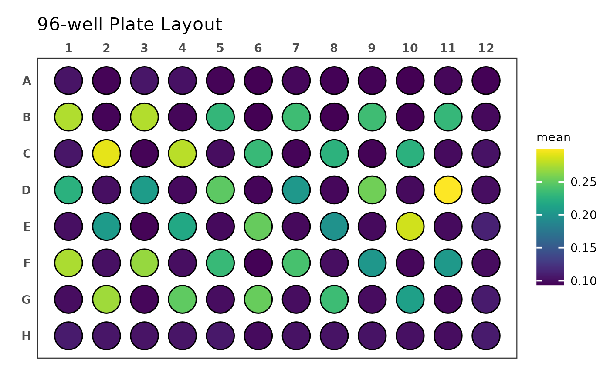
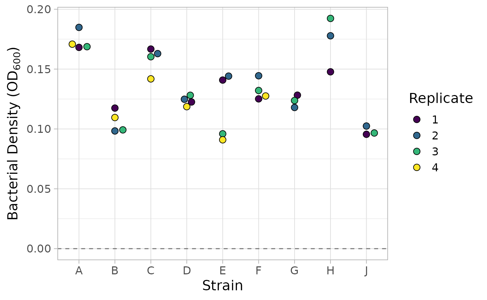
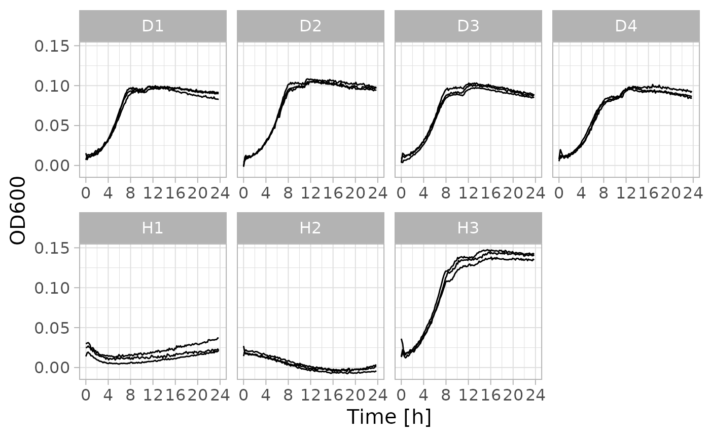

This vignette illustrates how the two high-level functions in the
tread package can be used in analysis workflows. While the
thematic focus of this vignette is microbiology, there is no reason why
the same principles could not be applied to another field that makes use
of plate readers.
Reading and Plotting of OD Values
First we will import the optical density measurements from the .xlsx
file using tparse() The file we are using contains OD
measurements of a 96-well plate at a single timepoint and multiple
measurements per well.
# get path to Excel file
file_OD <- system.file(
"extdata",
"single_time_multiple_reads.xlsx",
package = "tread"
)
# read data from file
dat_OD <- file_OD |> tparse()
#> ℹ Multiple reads per well detectedThe table we get back from tparse() contains the four OD
measurements for each well in addition to their mean and standard
deviation. It’s important to note that while this data set contains
measurements of all wells of a 96-well plate, tread’s
functions can import data for any number of measured wells.
dat_OD
#> # A tibble: 96 × 7
#> well mean st_dev x1_2 x0_1 x1_0 x2_1
#> <chr> <dbl> <dbl> <dbl> <dbl> <dbl> <dbl>
#> 1 A1 0.104 0.0243 0.0960 0.0896 0.0891 0.140
#> 2 A2 0.0951 0.00730 0.0913 0.0913 0.0918 0.106
#> 3 A3 0.105 0.0279 0.0944 0.0885 0.0893 0.146
#> 4 A4 0.102 0.0215 0.0933 0.0899 0.0907 0.134
#> 5 A5 0.0950 0.0122 0.0887 0.0887 0.0891 0.113
#> 6 A6 0.0933 0.00280 0.0944 0.0928 0.0897 0.0964
#> 7 A7 0.0968 0.00940 0.0932 0.0932 0.0900 0.111
#> 8 A8 0.0941 0.00560 0.0914 0.0901 0.0925 0.102
#> 9 A9 0.0945 0.00910 0.0898 0.0897 0.0903 0.108
#> 10 A10 0.0935 0.00680 0.0901 0.0905 0.0897 0.104
#> # ℹ 86 more rowsWe can now plot this data, e.g. using
ggplate::plate_plot().
dat_OD |> plate_plot(
position = well,
value = mean,
plate_size = 96,
plate_type = "round"
)
We can also add additional information to the table, e.g. which wells contain particular becterial strains liquid medium only for blanking. We recommend to use spreadsheet software such as Excel to create a similar table for you own needs and then import it into R instead of typing our the columns as is shown here.
# we create a table that describes the content of each well
annotation_OD <- tibble::tibble(
well = dat_OD$well,
content = c(
"buffer", "buffer", "buffer", "buffer", "buffer", "buffer", "buffer",
"buffer", "buffer", "buffer", "buffer", "buffer", "A1", "buffer", "A3",
"buffer", "D1", "buffer", "D3", "buffer", "G1", "buffer", "G3",
"buffer", "buffer", "A2", "buffer", "A4", "buffer", "D2", "buffer",
"D4", "buffer", "G2", "buffer", "blank", "B1", "buffer", "B3",
"buffer", "E1", "buffer", "E3", "buffer", "H1", "buffer", "H3",
"buffer", "buffer", "B2", "buffer", "B4", "buffer", "E2", "buffer",
"E4", "buffer", "H2", "buffer", "blank", "C1", "buffer", "C3",
"buffer", "F1", "buffer", "F3", "buffer", "J1", "buffer", "J3",
"buffer", "buffer", "C2", "buffer", "C4", "buffer", "F2", "buffer",
"F4", "buffer", "J2", "buffer", "blank", "buffer", "buffer",
"buffer", "buffer", "buffer", "buffer", "buffer", "buffer", "buffer",
"buffer", "buffer", "buffer"
)
)
# we join the annotation table to the OD table
dat_OD <- dat_OD |>
dplyr::left_join(annotation_OD, by = dplyr::join_by("well")) |>
dplyr::relocate("content", .after = "well")
dat_OD
#> # A tibble: 96 × 8
#> well content mean st_dev x1_2 x0_1 x1_0 x2_1
#> <chr> <chr> <dbl> <dbl> <dbl> <dbl> <dbl> <dbl>
#> 1 A1 buffer 0.104 0.0243 0.0960 0.0896 0.0891 0.140
#> 2 A2 buffer 0.0951 0.00730 0.0913 0.0913 0.0918 0.106
#> 3 A3 buffer 0.105 0.0279 0.0944 0.0885 0.0893 0.146
#> 4 A4 buffer 0.102 0.0215 0.0933 0.0899 0.0907 0.134
#> 5 A5 buffer 0.0950 0.0122 0.0887 0.0887 0.0891 0.113
#> 6 A6 buffer 0.0933 0.00280 0.0944 0.0928 0.0897 0.0964
#> 7 A7 buffer 0.0968 0.00940 0.0932 0.0932 0.0900 0.111
#> 8 A8 buffer 0.0941 0.00560 0.0914 0.0901 0.0925 0.102
#> 9 A9 buffer 0.0945 0.00910 0.0898 0.0897 0.0903 0.108
#> 10 A10 buffer 0.0935 0.00680 0.0901 0.0905 0.0897 0.104
#> # ℹ 86 more rowsHaving medium-only wells allows us to blank the measurements.
# first we calculate the blanking value from the average of medium-only wells
blank <- dat_OD |>
dplyr::filter(content == "blank") |>
dplyr::pull(mean) |>
mean()
# then we substract the blanking value from all OD values
# (mean and all four reading from each well)
dat_OD <- dat_OD |>
dplyr::mutate(
dplyr::across(
c("mean", tidyselect::starts_with("x")),
~ .x - blank
)
)
dat_OD
#> # A tibble: 96 × 8
#> well content mean st_dev x1_2 x0_1 x1_0 x2_1
#> <chr> <chr> <dbl> <dbl> <dbl> <dbl> <dbl> <dbl>
#> 1 A1 buffer -0.00387 0.0243 -0.0115 -0.0179 -0.0184 0.0322
#> 2 A2 buffer -0.0124 0.00730 -0.0162 -0.0162 -0.0157 -0.00137
#> 3 A3 buffer -0.00287 0.0279 -0.0131 -0.0190 -0.0182 0.0389
#> 4 A4 buffer -0.00547 0.0215 -0.0142 -0.0176 -0.0168 0.0268
#> 5 A5 buffer -0.0125 0.0122 -0.0188 -0.0188 -0.0184 0.00573
#> 6 A6 buffer -0.0142 0.00280 -0.0131 -0.0147 -0.0178 -0.0111
#> 7 A7 buffer -0.0107 0.00940 -0.0143 -0.0143 -0.0175 0.00323
#> 8 A8 buffer -0.0134 0.00560 -0.0161 -0.0174 -0.0150 -0.00507
#> 9 A9 buffer -0.0130 0.00910 -0.0177 -0.0178 -0.0172 0.000733
#> 10 A10 buffer -0.0140 0.00680 -0.0174 -0.0170 -0.0178 -0.00377
#> # ℹ 86 more rowsFinally, we can filter out any wells that do not contain bacteria and plot their blanked OD values.
library(ggplot2)
library(ggbeeswarm)
# filter out wells that do not contain bacteria and separate the population name
# into the strain name and the replicate number
dat_OD <- dat_OD |>
dplyr::filter(content != "buffer" & content != "blank") |>
tidyr::separate("content", into = c("strain", "replicate"), sep = 1)
dat_OD
#> # A tibble: 33 × 9
#> well strain replicate mean st_dev x1_2 x0_1 x1_0 x2_1
#> <chr> <chr> <chr> <dbl> <dbl> <dbl> <dbl> <dbl> <dbl>
#> 1 B1 A 1 0.168 0.0245 0.169 0.150 0.151 0.202
#> 2 B3 A 3 0.169 0.0215 0.164 0.155 0.156 0.201
#> 3 B5 D 1 0.123 0.0124 0.122 0.110 0.119 0.139
#> 4 B7 D 3 0.128 0.0134 0.146 0.114 0.124 0.130
#> 5 B9 G 1 0.128 0.0141 0.116 0.121 0.128 0.148
#> 6 B11 G 3 0.124 0.0126 0.122 0.118 0.114 0.142
#> 7 C2 A 2 0.185 0.0211 0.187 0.169 0.170 0.214
#> 8 C4 A 4 0.171 0.0232 0.167 0.153 0.159 0.205
#> 9 C6 D 2 0.125 0.0165 0.118 0.110 0.123 0.148
#> 10 C8 D 4 0.119 0.00620 0.116 0.111 0.124 0.124
#> # ℹ 23 more rows
# we plot the blanked OD values grouped by the strain name
dat_OD |> ggplot(aes(x = strain, mean, fill = replicate)) +
geom_hline(yintercept = 0, linetype = 2, alpha = 0.5) +
geom_beeswarm(cex = 2.5, size = 3, color = "black", shape = 21) +
scale_fill_viridis_d() +
labs(
x = "Strain",
y = bquote("Bacterial Density ("*OD[600]*")"),
fill = "Replicate"
) +
theme_light(15)
Joining Multiple Pieces and Plotting of a Growth Curve
When running longer kinetic measurements (e.g. growth curves), plate readers cannot be used by other members of the lab. While the kinetic measurement programs can be stopped and restarted, the plate reader software i-control™ will always place the data from these restarts in a separate Excel sheet. Merging these segments of a kinetic measurements is laborious when done manually.
Using tunite() saves a considerable amount of time. The
function does this by:
- Importing data from each single sheet inside of an Excel file
- Getting the exact start time and duration of each segment
- Calculating the time offsets necessary to merge the segments into a continuous time series
Because tparse() is used for step (1),
tunite() will print diagnostic messages for each of the
sheets it imports. You can suppress these using
suppressMessages().
# get path to Excel file
file_gc <- system.file(
"extdata",
"time_series_segments.xlsx",
package = "tread"
)
# read data from file
dat_gc <- file_gc |> tunite()
#> ℹ Time series detected
#> ℹ Multiple reads per well detected
#> ℹ Time series detected
#> ℹ Multiple reads per well detected
# repeat with message suppression
dat_gc <- file_gc |> tunite() |> suppressMessages()The table that tunite() returns contains a time series
of OD measurements for a number of wells.
dat_gc
#> # A tibble: 3,432 × 9
#> well time temp mean st_dev x1_2 x0_1 x1_0 x2_1
#> <chr> <dbl> <dbl> <dbl> <dbl> <dbl> <dbl> <dbl> <dbl>
#> 1 B1 0 30.6 0.131 0.0254 0.131 0.111 0.114 0.166
#> 2 B1 900 30.4 0.129 0.0216 0.132 0.112 0.115 0.159
#> 3 B1 1500 30.5 0.133 0.0226 0.146 0.113 0.114 0.157
#> 4 B1 2100 30.7 0.132 0.0226 0.143 0.113 0.115 0.160
#> 5 B1 2700 30.6 0.133 0.0220 0.146 0.114 0.116 0.158
#> 6 B1 3300 30.2 0.133 0.0208 0.144 0.114 0.116 0.156
#> 7 B1 3900 30.6 0.135 0.0227 0.147 0.115 0.117 0.161
#> 8 B1 4500 30.6 0.134 0.0210 0.146 0.116 0.118 0.158
#> 9 B1 5100 30.5 0.135 0.0208 0.147 0.117 0.119 0.159
#> 10 B1 5700 30.5 0.136 0.0201 0.147 0.118 0.120 0.158
#> # ℹ 3,422 more rowsAgain we will add additional information to the table. In this case it is the name of the bacterial population as well as a number to signify the replicate growth curve.
# we create a table that contains information which population is inside which
# well and also gives the replicate wells a replicate number
annotation_gc <- tibble::tibble(
well = c(
"B1", "B2", "B3", "B4", "C4", "C5", "C6", "C8", "D9", "D10", "D11", "D12",
"E12", "F1", "F2", "F4", "G5","G6", "G7", "G8", "H8", "H9", "H10", "H12"
),
population = c(
"D1", "D2", "D3", "D4", "H1", "H2", "H3", "blank", "D1", "D2", "D3", "D4",
"H1", "H2", "H3", "blank", "D1", "D2", "D3", "D4", "H1", "H2", "H3", "blank"
),
gc_rep = c(
1, 1, 1, 1, 1, 1, 1, 1, 2, 2, 2, 2, 2, 2, 2, 2, 3, 3, 3, 3, 3, 3, 3, 3
)
)
# we join the annotation table to the OD table
dat_gc <- dat_gc |>
dplyr::left_join(annotation_gc, by = dplyr::join_by("well")) |>
dplyr::relocate(c("population", "gc_rep"), .after = "well")
dat_gc
#> # A tibble: 3,432 × 11
#> well population gc_rep time temp mean st_dev x1_2 x0_1 x1_0 x2_1
#> <chr> <chr> <dbl> <dbl> <dbl> <dbl> <dbl> <dbl> <dbl> <dbl> <dbl>
#> 1 B1 D1 1 0 30.6 0.131 0.0254 0.131 0.111 0.114 0.166
#> 2 B1 D1 1 900 30.4 0.129 0.0216 0.132 0.112 0.115 0.159
#> 3 B1 D1 1 1500 30.5 0.133 0.0226 0.146 0.113 0.114 0.157
#> 4 B1 D1 1 2100 30.7 0.132 0.0226 0.143 0.113 0.115 0.160
#> 5 B1 D1 1 2700 30.6 0.133 0.0220 0.146 0.114 0.116 0.158
#> 6 B1 D1 1 3300 30.2 0.133 0.0208 0.144 0.114 0.116 0.156
#> 7 B1 D1 1 3900 30.6 0.135 0.0227 0.147 0.115 0.117 0.161
#> 8 B1 D1 1 4500 30.6 0.134 0.0210 0.146 0.116 0.118 0.158
#> 9 B1 D1 1 5100 30.5 0.135 0.0208 0.147 0.117 0.119 0.159
#> 10 B1 D1 1 5700 30.5 0.136 0.0201 0.147 0.118 0.120 0.158
#> # ℹ 3,422 more rowsWe will now use the medium-only wells to blank all OD measurements.
# first we calculate the blanking value from the average of medium-only wells
blank <- dat_gc |>
dplyr::filter(population == "blank") |>
dplyr::pull(mean) |>
mean()
# then we substract the blanking value from all OD values
# (mean and all four reading from each well)
dat_gc <- dat_gc |>
dplyr::mutate(
dplyr::across(
c("mean", tidyselect::starts_with("x")),
~ .x - blank
)
)
dat_gc
#> # A tibble: 3,432 × 11
#> well population gc_rep time temp mean st_dev x1_2 x0_1 x1_0
#> <chr> <chr> <dbl> <dbl> <dbl> <dbl> <dbl> <dbl> <dbl> <dbl>
#> 1 B1 D1 1 0 30.6 0.00893 0.0254 0.00933 -0.0111 -0.00727
#> 2 B1 D1 1 900 30.4 0.00743 0.0216 0.00983 -0.0102 -0.00697
#> 3 B1 D1 1 1500 30.5 0.0109 0.0226 0.0241 -0.00907 -0.00737
#> 4 B1 D1 1 2100 30.7 0.0107 0.0226 0.0209 -0.00877 -0.00687
#> 5 B1 D1 1 2700 30.6 0.0115 0.0220 0.0239 -0.00787 -0.00607
#> 6 B1 D1 1 3300 30.2 0.0111 0.0208 0.0225 -0.00737 -0.00537
#> 7 B1 D1 1 3900 30.6 0.0131 0.0227 0.0250 -0.00697 -0.00477
#> 8 B1 D1 1 4500 30.6 0.0128 0.0210 0.0243 -0.00577 -0.00387
#> 9 B1 D1 1 5100 30.5 0.0135 0.0208 0.0248 -0.00467 -0.00307
#> 10 B1 D1 1 5700 30.5 0.0139 0.0201 0.0258 -0.00397 -0.00207
#> # ℹ 3,422 more rows
#> # ℹ 1 more variable: x2_1 <dbl>Now we are ready to plot the growth curves.
library(ggplot2)
# filter out blank wells
dat_gc <- dat_gc |> dplyr::filter(population != "blank")
# plot OD values over time
dat_gc |> ggplot(aes(time / 3600, mean, group = well)) +
facet_wrap(vars(population), nrow = 2, scales = "free_x") +
geom_line(linewidth = 0.5) +
scale_x_continuous(limits = c(0, 24), breaks = seq(0, 24, 4)) +
labs(
x = "Time [h]",
y = "OD600"
) +
theme_light(15)